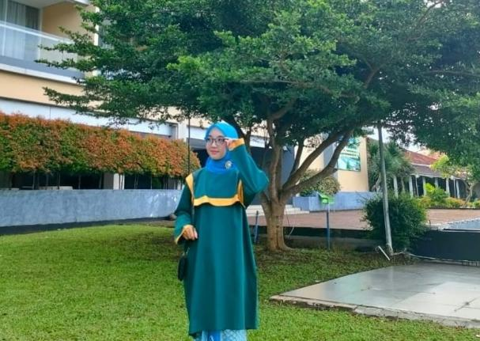
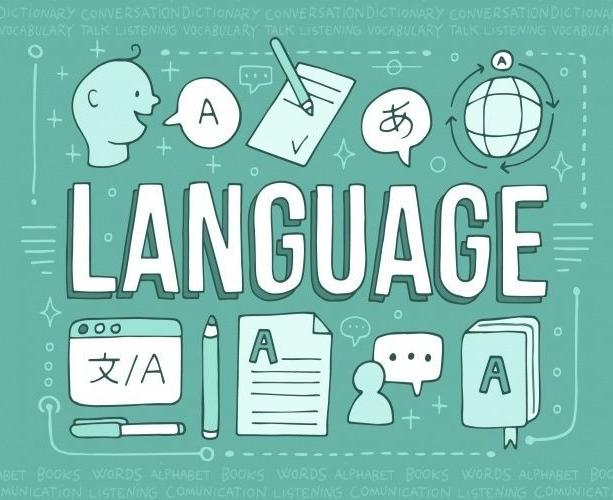
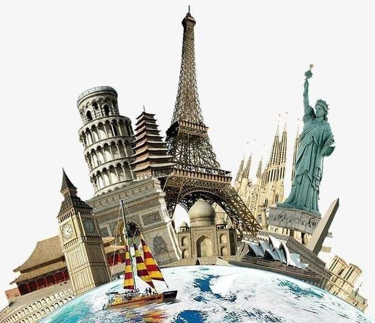

Website Design for Lecturers and Educators
I specialize in designing professional websites for lecturers and educational institutions. My designs focus on creating an interactive platform that enhances the learning experience, showcasing courses, research, and providing easy access to resources for students and faculty alike.
- Course Information and Syllabus Display
- Online Lecture and Video Integration
- Student Enrollment and Registration Forms
- Discussion Forums and Student Collaboration Tools
- Responsive and Mobile-Friendly Design for Easy Access
- Integration with Learning Management Systems (LMS)
- Research Publications and Portfolio Showcase
My goal is to create a website that serves as a central hub for academic materials, promoting engagement between students and educators while enhancing the educational experience.
Website Development for Lecturers and Academic Professionals
My website development services are tailored to meet the needs of academic professionals. I'm provide custom-built websites that focus on functionality, interactivity, and accessibility, helping educators manage their courses, interact with students, and share academic resources efficiently.
- Custom Website Development for Academic Needs
- Integration with Learning Management Systems (LMS)
- Secure Online Course Registration and Payment Systems
- Real-Time Communication Tools (e.g., chat, video conferencing)
- Content Management Systems (CMS) for Easy Content Updates
- Student Portal for Access to Grades, Lectures, and Assignments
- SEO and Performance Optimization for Better Accessibility
I'm focus on building secure, user-friendly websites that enable academic professionals to enhance their teaching, manage their courses effectively, and connect with students in meaningful ways.
Website Design for Business Leaders
My website design services are crafted to reflect your professionalism, authority, and vision as a business leader. I focus on creating a sleek, modern, and functional design that enhances your leadership image while providing an intuitive user experience for both your clients and employees.
- Professional, Clean, and Modern Design Aesthetic
- Intuitive Navigation for Seamless User Experience
- Highlighting Your Leadership Values and Company Mission
- Integrated Features for Team Collaboration and Communication
- Client-Centered Design with Easy Access to Services
- Optimized for All Devices, Ensuring Accessibility Anywhere
Website Development for Executives
I provide comprehensive website development services for executives and business leaders, offering custom-built websites that reflect your professional stature while supporting your business operations. My development process ensures secure, scalable, and efficient solutions that promote leadership values and enhance your company's visibility.
- Custom Development Tailored to Your Executive Needs
- Integrated Business Solutions for Streamlined Operations
- High-Level Security Features to Protect Sensitive Data
- Scalable Architecture to Grow with Your Business
- Executive Dashboard for Real-Time Analytics and Reporting
- Seamless Integration with Communication and Collaboration Tools
- SEO and Performance Optimization to Enhance Your Online Presence
My aim is to build a powerful, secure, and efficient website that serves as a strong foundation for your executive role, empowering you with tools for decision-making, communication, and business growth.

Website Design for Translation Professionals
As a translator, having a professional and functional website is essential to showcase your expertise and attract clients. I specialize in creating clean, user-friendly websites that highlight your translation services, portfolio, and client testimonials.
- Custom Design to Reflect Your Translation Services
- Multilingual Capabilities to Showcase Various Languages
- Integrated Contact Forms for Easy Client Communication
- Portfolio Section to Display Your Previous Translation Work
- SEO Optimization to Improve Online Visibility
- Secure Client Login for Confidential Document Handling
With a website designed specifically for translation professionals, you can easily connect with clients, present your work, and grow your freelance business effectively.
Website Development for Translation Services
As a translation professional, your website needs more than just a visually appealing design. It should be a fully functional platform that helps manage client requests, translation projects, and secure document handling. I specialize in developing websites that streamline the entire translation process, from initial contact to project delivery.
- Custom Website Development Tailored to Your Services
- Multilingual Functionality for Multiple Language Options
- Content Management System (CMS) for Easy Updates
- Integration of File Upload/Download Features for Document Sharing
- Secure Payment Systems for Freelance Transactions
- Client Dashboard for Tracking Project Progress and Deliverables
- SEO Best Practices for Improved Search Engine Ranking
With a robust and secure website, you can efficiently manage your translation service, communicate with clients, and deliver projects with ease and professionalism.
Website Design for MCs and Event Hosts
My website development services are designed to create a seamless, secure, and highly functional online presence for MCs and event hosts. I ensure that every website is built with performance, scalability, and user experience in mind, making it easy for clients to book services and access information.
- Custom Website Development with User-Centric Features
- Integration of Online Booking and Event Scheduling Systems
- Optimized for Speed and Mobile Devices
- SEO-Optimized for Better Online Visibility
- Secure Contact Forms and Client Communication Tools
- Content Management System (CMS) for Easy Updates
I'm focus on creating a secure, fast, and responsive website, ensuring that potential clients can easily find, learn about, and book your services. My websites are built to help you grow your business and connect with a wider audience.
Website Development for Event Professionals
My team creates dynamic and engaging websites specifically designed for event professionals like MCs. We ensure your site is not only visually appealing but also functional, enabling easy navigation, event management, and direct client interaction.
- Seamless Event Booking Integration
- Customizable Portfolio Showcasing Your Previous Work
- Optimized for Search Engines to Boost Visibility
- Secure Client Communication and Payment Systems
- Social Media Integration for Broader Reach
- Interactive and Engaging User Interface
My development process focuses on building a website that promotes your brand, enhances user experience, and simplifies client communication, ultimately helping you grow your event-hosting business.
Website Design for Medical Professionals
As a website designer specializing in the healthcare sector, you create modern, user-friendly websites for doctors and healthcare providers. Your designs focus on providing patients with easy access to important information, scheduling services, and improving the overall healthcare experience.
- Responsive, Mobile-Optimized Layouts for Easy Access
- Integrated Appointment Scheduling Systems for Patient Convenience
- Telemedicine Features for Virtual Consultations
- User-Friendly Patient Portals for Medical Records
- Clear and Informative Content for Patient Education
- Compliant with Healthcare Standards (e.g., HIPAA)
Your goal is to enhance the interaction between doctors and patients through innovative web solutions, ensuring a seamless, professional online presence that fosters trust and engagement.
Website Development for Healthcare Professionals
As a web developer specializing in healthcare, you create customized, secure, and scalable websites for doctors, clinics, and healthcare facilities. Your focus is on building efficient back-end systems and integrating essential features that enhance both patient and healthcare provider experiences.
- Custom Development of Healthcare Websites Tailored to Specific Needs
- Integration of Secure Online Appointment Systems
- Development of Patient Portals for Access to Medical Records
- Compliance with Healthcare Data Protection Standards (e.g., HIPAA)
- Scalable Solutions for Growing Medical Practices
- Search Engine Optimization (SEO) to Increase Online Visibility
Your goal is to provide robust, secure, and user-centric websites that support healthcare professionals in delivering top-quality care, while maintaining a reliable and efficient online presence for both doctors and their patients.

Website Design for Tour Guides
I specialize in creating engaging and informative websites for tour guides. My goal is to design websites that not only highlight the unique experiences I offer but also make it easy for potential clients to book tours and learn about the destinations I guide them to.
- Visually Stunning Gallery of Destinations
- Online Booking System for Easy Tour Reservations
- Interactive Maps and Itinerary Details
- Mobile-Friendly Design for On-the-Go Access
- Client Testimonials and Reviews
- SEO Optimization to Increase Online Visibility
With my website design, I ensure that visitors get a seamless, user-friendly experience that encourages them to book a tour while learning more about the amazing experiences I offer.
Website Development for Tourism Businesses
I offer specialized website development services for tourism businesses, ensuring that your website is not only visually appealing but also functional and easy to navigate. My goal is to create a platform that enhances your customers' experience, facilitates seamless booking, and showcases the best of what your business offers.
- Custom-Built Solutions for Tourism Services
- Integration with Booking and Reservation Systems
- Secure Payment Gateways for Easy Transactions
- Responsive Design for All Devices (Desktop, Tablet, Mobile)
- Content Management System (CMS) for Easy Updates
- SEO Optimization to Boost Online Presence
With my development services, I ensure that your tourism website is fast, secure, and capable of handling a high volume of visitors, while providing your customers with the information and functionality they need to book and enjoy their trips.